6. Stuart Britain (1603 AD to 1714 AD)

A turbulent time in English history when Puritanism came to the fore...which ultimately resulted in the religious landscape assuming its present form...

James I 1603 AD to 1625 AD
The Gunpower Plot (November 1605) sought to overthrow the Protestant government to restore Catholic rule in England. After the Gunpowder Plot, the king sanctioned measures to control English Catholics. In May 1606, Parliament passed the Popish Recusants Act, which could require any subject to take an Oath of Allegiance denying the pope's authority over the king. James was conciliatory towards Catholics who took the Oath of Allegiance, and tolerated crypto-Catholicism even at court (Crypto-Religion is the secret adherence to one religion whilst publicly professing to be another faith).
Charles I 1625 AD to 1649 AD
The English Reformation was at the forefront of political debate, Puritan reformers considered Charles too sympathetic to Arminianism, and opposed his desire to move the Church of England in a more traditional and sacramental direction. (Arminianism is a Protestant theological tradition, named after Jacobus Arminius, that emphasizes human free will and God's universal love in salvation and contrasts with Calvinism.)
Charles I was executed for high treason in 1649, following England's Civil Wars, because of his refusal to share power with Parliament, belief in divine right, and attempts to rule as an absolute monarch. (The divine right of kings is a 16th–18th Century political and religious doctrine asserting that monarchs derive their authority directly from God, not from their subjects, parliament, or the church. This absolute power meant rulers were accountable only to God, justifying the defiance of traditional feudal limitations and establishing autocratic rule.)
English Interregnum 1649 AD to 1660 AD
A period of intense religious upheaval chacterised by the dismantling of the CofE episcopal structure and the rise of Puritan influence.
Charles II 1660 AD to 1685 AD
As part of the restoration, the Church of England was restored as the national Church in England, backed by the Clarendon Code and the Act of Uniformity 1662.
James II 1685 AD to 1688 AD
Despite being Catholic, James’ accession to throne was tolerated following the turmoil of the previous years - James II was the last Catholic monarch. However, tolerance of James's personal views did not extend to Catholicism in general, and both parliament refused to pass measures viewed as undermining the primacy of the Protestant religion. The king’s attempts to impose them by absolutist decrees as a matter of his perceived divine right met with opposition.
The Seven Bishops were members of the Church of England tried and acquitted for seditious libel in the Court of Kings Bench in June 1688 after they submitted a petition requesting the reconsideration of the King's religious policies. The very unpopular prosecution of the bishops is viewed as a significant event contributing to the November 1688 Glorious Revolution and deposition of James II.
The Glorious Revolution was caused by deep-seated fears of a Catholic dynasty in Protestant England, stemming from King James II's attempts to restore Catholicism and increase royal power, clashing with Parliament's authority. It led to the deposition of King James II in November 1688 - he was replaced by his daughter Mary II.
Mary II 1689 AD to 1694 AD
Both Mary II and Anne were staunch Protestants, despite having Catholic parents, their reigns reinforced the Protestant succession.
Anne 1702 AD to 1714 AD
Puritans vs Conservatives
At the start of the reign of James I, Puritans presented the king with the Millenary Petition - this was a petition for church reform, which was referred to the Hampton Court Conference of 1604. The outcome of the conference was agreement to produce a new version of the Book of Common Prayer and a new translation of the Bible. While a disappointment for Puritans, the provisions were aimed at satisfying moderate Puritans and isolating their more radical counterparts.
Also during the reign of James I, the vast land holdings seized from the monasteries under Henry VIII of England in the 1530s were sold, mostly to local gentry, greatly expanding the wealth of that class of gentlemen.
In terms of religious affiliation in England, the Catholics were down to about 3% of the population, but comprised about 12% of the gentry and nobility.
Through the reigns of James I and Charles I, and culminating in the English Civil War (which resulted in the protectorate of Oliver Cromwell), there were significant swings back and forth between two factions: the Puritans (and other radicals) who sought more far-reaching reform, and the more conservative churchmen who aimed to keep closer to traditional beliefs and practices.
Christmas is Abolished
Charles I was still on the throne in 1647, when the English Parliament passed an Ordinance to abolish Christmas, along with Easter and Whitsuntide, due to the influence of Puritans who considered the celebrations to be unscriptural and associated with excess. This ban was unpopular and led to riots, and enforcement included soldiers breaking up services and closing shops on December 25th.
Under the Protectorate of the Commonwealth of England from 1649 to 1660, Anglicanism was disestablished, presbyterian ecclesiology was introduced as an adjunct to the Episcopal system, the Articles were replaced with a non-Presbyterian version of the Westminster Confession (1647), and the Book of Common Prayer was replaced by the Directory of Public Worship.
Despite this, about one quarter of English clergy refused to conform. In the midst of the apparent triumph of ==Calvinism==, the 17th Century did ultimately result in a Golden Age of Anglicanism.
Jews Encouraged to return
Cromwell was aware of the contribution that Jewish financiers made to the economic success of Holland, now England's leading commercial rival. It was this that led to his encouraging Jews to return to England, 350 years after their banishment, in the hope that they would help speed up the recovery of the country after the disruption of the Civil Wars.
Restoration
King Charles II restored Christmas in England in 1660 when he returned to the throne, lifting the ban that had been put in place by the Puritan-dominated Parliament during the English Civil Wars. The Restoration of Charles II (in 1660 and which saw the end of Puritan rule) also saw Anglicanism being restored to a form not far removed from the Elizabethan version. The 1662 revision of the Book of Common Prayer became the unifying text of the Church after the English Civil War.
King Charles Ii also restored priests who had been expelled from their benefices and actively appointed his supporters who had resisted Cromwell to vacancies. He translated the leading royal supporters to the most prestigious and rewarding sees. He also considered the need to reestablish episcopal authority and to reincorporate "moderate dissenters" in order to effect Protestant reconciliation.
Further Toleration
James II was overthrown by William of Orange in 1688, and the new king moved quickly to further ease religious tensions. Many of his supporters had been English Dissenters or Nonconformist non-Anglicans. With the Act of Toleration enacted on 24 May 1689, Nonconformists had freedom of worship. That is, those Protestants who dissented from the Church of England such as Baptists, Congregationalists and Quakers were allowed their own places of worship and their own teachers and preachers, subject to acceptance of certain oaths of allegiance. These privileges expressly did not apply to Catholics and Unitarians, and it continued the existing social and political disabilities for dissenters, including exclusion from political office. The religious settlement of 1689 shaped policy down to the 1830s.
The Middle Ground
The religious landscape of England assumed its present form, with an Anglican established church occupying the middle ground, and Roman Catholics and those Puritans who dissented from the establishment, too strong to be suppressed altogether, having to continue their existence outside the national church rather than controlling it.
Jacobean
The Jacobean era was 1603-1625 during the reign of King James I, design and architecture during this this period represents a transitional style between Elizabethan and Barique. Furniture, including fixtures in churches, was dark oak and of heavy construction, and Renaissance-inspired carvings. Characterized by sharp, rectilinear lines, it features intricate geometric patterns, floral motifs, and turned legs.
Many pulpits, pews and other church furniture are Jacobean due to the change to preaching style services following the English Reformation.
1603 AD
The Millenary Petition was a list of requests given to James I by Puritans in 1603 when he was travelling to London in order to claim the English throne. The carefully worded document expressed Puritan distaste regarding the state of the Church of England, and took into consideration James' religious views as well as his liking for a debate, as written in Basilikon Doron. It was claimed, but not proven, that the petition had 1,000 signatures of Puritan ministers. The petition is referred to as it is, as a reference to the purported mille, meaning 1,000, signers.
While many of the main Puritan goals were rebutted, the petition did culminate in the Hampton Court Conference, which eventually led James to authorize the 1604 minor revision of the Book of Common Prayer. The most substantial outcome of the conference was the commission of a new English translation of the Bible, now known as the King James Version.
1603 AD
A pulpit is a raised stand for preachers in a Christian church. The origin of the word is the Latin pulpitum (platform or staging). The oldest mention of a pulpit in England dates from the 12th century. The oldest example still in existence is believed to date from about 1330. In the 15th century, only a fifth of churches had a pulpit. In 1603, pulpits are made compulsory in English churches, this was part of a broader push to standardize church fittings to support the preaching of Protestant doctrine and, in some contexts, to ensure a proper setting for reading royal proclamations.
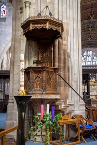
St Laurence, Ludlow - Pulpit
1604 AD (Januray)
The Hampton Court Conference is convened (at Hampton Court Palace) for discussion between King James I of England and representatives of the Church of England, including leading English Puritans. The conference resulted in the 1604 Book of Common Prayer and, in 1611, the King James Version of the Bible.
1604 AD
King James I ordered some further changes, the most significant being the addition to the Catechism of a section on the Sacraments.
1606 AD
Norton-in-Hales church is notable as it has one of the earliest known commissions by Inigo Jones. Dating from 1606 and made from Derbyshire alabaster, the commission is a monument to Frances Cotton who died in childbirth. The monument was later amended to incorporate Sir Rowland Cotton himself who died in 1635. Cotton had various appointments in Shropshire including High Sheriff, member of the Council of the Marches and MP.

St Chad, Norton-in-Hales - Monument by Inigo Jones
Chief Justice of Leighton of Plaish (died 1607)
The earliest monument in Shropshire which depicts the deceased lying on his side.
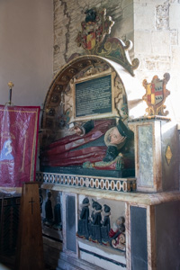
St James, Cardington - Monument with Deceased Lying on Side
1611 AD
The King James Bible is published. It was commissioned in 1604 and sponsored by King James VI & I.
1615 AD
After the reformation it became common practice to display the Ten Commandments, Apostle's Creed and the Lord's Prayer. For example, at Lydbury North the texts are inscribed on a large tympanum over the rood screen (dated 1615).
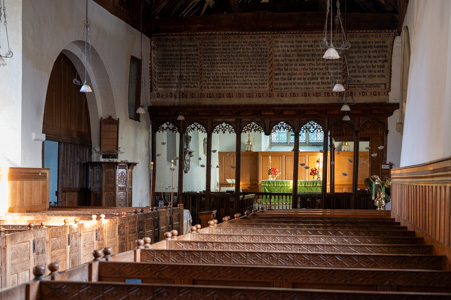
St Michael and All Angels, Lydbury North - Religious Texts
(early) 17th Century: Pews
Following the English Reformation, pews became a more prominent feature of English churches due to the rise in preaching. In the medieval period stone benches were placed against the walls, but from the Jacobean period onwards box pews became prominent.
Worthen church has a collection of pews which is considered to be the finest assembly of ancient pews in Shropshire. The box pews are Jacobean and the plain benches are possibly medieval.
Rows of benches are often erroneously referred to as pews. Pews are actually enclosed structures, and of a much later date and had doors to protect from drafts. These ‘box pews’ were sometimes provided with armchairs and cushions and perhaps even a stove and curtains.

All Saints, Worthen - Pews
Stalls
Church stalls, originating from early medieval monastic traditions, are specialized seating in the chancel for clergy or a choir, evolving from simple, standing-only arrangements into elaborate wooden structures featuring hinged seats called misericords. Developed by the 11th century, they grew more ornate by the 15th century, often including high backs, canopies, and detailed carvings used during long daily services. Early rules demanded standing, with, over time, the addition of misericords ("mercy seats") - small, carved ledges under folding seats that provided support for leaning during long services. Medieval stalls are famous for misericords, which often feature, religious, secular, or "grotesque" carvings on the underside, highlighting a blend of piety and medieval humour.
The complete set of misericords at Ludlow is one of the finest in England.
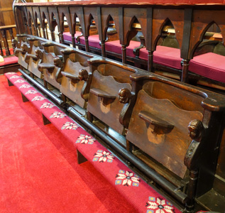
St Chad, Norton-in-Hales - Misericords
Poppyhead
Poppyheads are ornaments, often found on top of the upright end of seats and benches. They may be carved in the shape of figures, animals, beasts, foliage, or a number of other shapes.
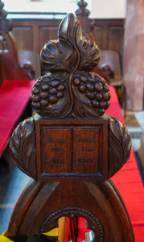
St Chad, Norton-in-Hales - Poppyhead
(early) 17th Century AD: Hatchment
A hatchment is a diamond-shaped board made of wood or wood and canvas. It bears the arms, crest or motto of a deceased person. They developed as a replacement for the earlier, more cumbersome tradition of carrying and then leaving a knight's armour - including helmets, shields, and swords - in the church following a funeral.
Hatchments were carried in front of funeral processions to the church, and afterwards hung on the gate of the deceased person's house. After it had been hung on the gates for several months, it was taken down and hung in the church.
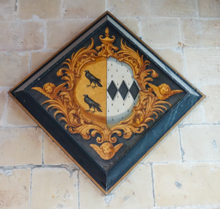
St Mary Magdalene, Battlefield - Hatchment
1620 AD
Differing from their contemporary Puritans (who sought to reform and purify the Church of England), the Pilgrims chose to separate themselves from the Church of England, which forced them to pray in private. They believed that its resistance to reform and Roman Catholic past left it beyond redemption. Starting in 1608, a group of English families left England for the Netherlands, where they could worship freely. By 1620, the community determined to cross the Atlantic for America, which they considered a "new Promised Land”, where they would establish Plymouth Colony.
Mayflower was an English sailing ship that transported a group of English families, known today as the Pilgrims, from England to the New World in 1620.
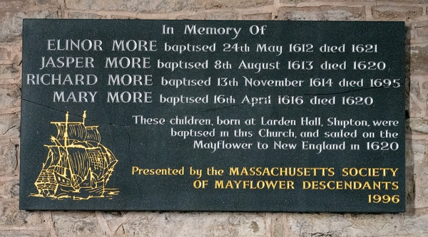
St James, Shipton - Mayflower Memorial Plaque
1624 AD
As the 17th Century progressed, the trend for memorials was for more ostentation and less piety - now the deceased were depicted reclining languidly, often in apparently uncomfortable postures.
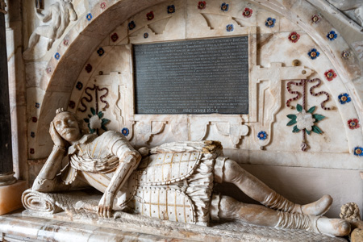
All Saints, Neen Sollars - Memorial
1630s AD
Laudian reforms were a 1630s initiative by Archbishop William Laud to impose uniformity, "beauty of holiness," and high-church Anglicanism on the Church of England, moving away from ==Calvinism==. They emphasized sacraments, clerical authority, and ordained the movement of communion tables to the east end, railing them in as altars, which alarmed Puritans.
Altar Rail
The altar rail (also known as a communion rail or chancel rail) is a low barrier, sometimes ornate and usually made of stone, wood or metal in some combination, delimiting the chancel and the sanctuary. Altar rails in English churches emerged primarily in the 17th century as a key feature of Laudian reforms, designed to protect the Holy Table (altar) and enforce kneeling for Communion. While they served the practical purpose of keeping animals out of the sanctuary, they became a focal point of religious dispute, often being removed by Puritans and reinstated during the Restoration, before becoming standard in Anglican churches.
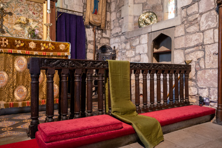
St Peter, Wrockwardine - Altar Rail
1640 AD to 1641 AD
Richard Baxter lived in Bridgnorth. Originally from Rowton, Baxter was an English Nonconformist church leader and theologian. Most notably, following the Act of Uniformity 1662, Baxter refused an appointment as Bishop of Hereford and was expelled from the Church of England. He became one of the most influential leaders of the Nonconformist movement, spending time in prison. His views remain controversial within the Calvinist tradition of Predestination because he taught that Christians are placed under a type of faith-law.
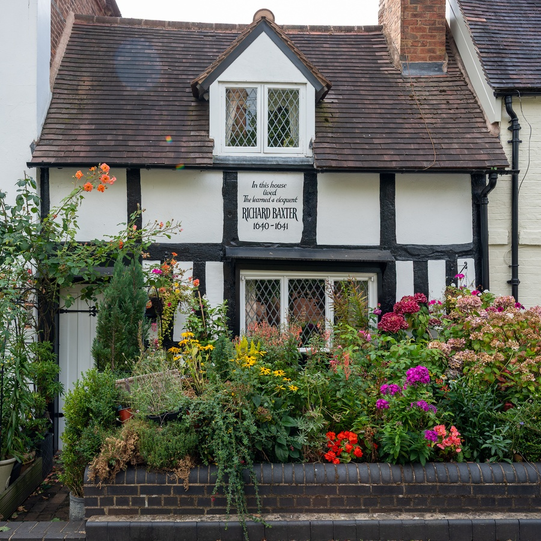
Richard Baxter House, Bridgnorth
Reference: Wikipedia - Richard Baxter
English Civil War (1642 to 1651)
During the Civil War on 31st March 1646, St Leonard's church at Bridgnorth was used by Cromwell's troops as an ammunition store. A cannon shot caused it to explode, and as a result fire swept through the town. The church was repaired, and in the seventeenth-century, the nave roof was installed. The church is now almost entirely a Victorian restoration, notably the width of the nave and aisles together is not much less than that of St Paul's Cathedral in London.
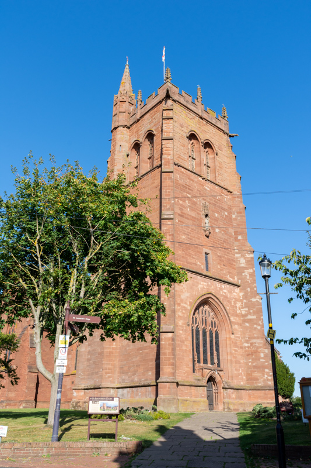
St Leonard, Bridgnorth
Sir Isaac Newton (4th January 1643 to 31st December 1727)
Newton wrote extensively on theology, producing more written words on the subject than on physics and mathematics combined, but he published very little of it during his lifetime due to his unorthodox, anti-Trinitarian views.
1644 AD
The Directory for Public Worship (a liturgical manual) is produced by the Westminster Assembly (The Westminster Assembly of Divines was a council of divines (theologians) and members of the English Parliament appointed from 1643 to 1653 to restructure the Church of England) to replace the Book of Common Prayer. It was approved by the Parliament of England (the "Long Parliament") in 1644.
1646 AD
During the English Civil War, iconoclasm was a widespread, Puritan-led destruction of religious art, imagery, and "superstitious" fixtures, aimed at purging the Church of England of Catholic-style practices and Laudian innovations. Targeting cathedrals and parish churches, radical Parliamentarians and soldiers broke stained glass, smashed statues, and removed communion rails to enforce a "godly" reformation.
(Laudianism was an early 17th Century movement that tried to avoid the extremes of Roman Catholicism and Puritanism.)

St Gregory, Morville - Medieval stained glass showing the crucifixion, smashed by Cromwell’s troops in 1646 and subsequently repaired
Protectorate of the Commonwealth of England
1653 - 1659 AD the Protectorate of the Commonwealth of England - a republican period during which England was ruled by a Lord Protector, initially Oliver Cromwell.

Church Building - 17th Century
In the 17th Century, a small number of churches were built (or rebuilt or otherwise repaired after the Civil War) in Shropshire, but these were done in the Gothic style, despite the fact that there was a move to the classical style (being led by Inigo Jones).
St John the Baptist, Stokesay, was destroyed during the English Civil War; the current church is a rare example of a church extensively rebuilt during the Puritan period (1654) although some Norman features survive.
St Bartholomew, Benthall, originally was a chapel which was destroyed in the Civil War - the present church was built to replace it in 1667. The church is considered to be a fine example of a restoration era (the post Civil War Stuart period) church.
The Jacobean style is the second phase of Renaissance architecture in England, which followed the Elizabethan style. It is named after King James I of England, with whose reign (1603–1625 in England) it is associated. At the start of James’ reign there was little stylistic change in architecture, as Elizabethan trends continued. However, James' death in 1625 coincided with a decisive change towards more classical architecture, with Italian influence, which was led by Inigo Jones. The style is sometimes called Stuart architecture, or English Baroque.
Other notable church builds in the 17th Century include: Condover which was extensively rebuilt between 1662 and 1679 following the collapse of the tower, Ratlinghope, Loughton, Astley Abbots (chancel only), Myddle (tower only), Adderley (aisle only), More (transept only), Shrawardine, High Ercall (restoration), Sheriffhales, Little Berwick and Great Bolas (chancel only).
In 1689, Holy Trinity, Minsterley was the first church in Shropshire to be built on classical lines (and the first in the county to be built of brick).
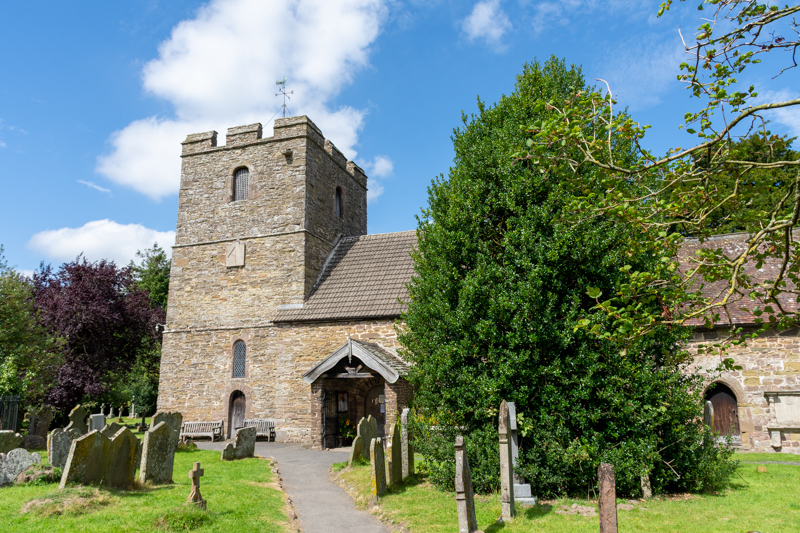
St John the Baptist, Stokesay
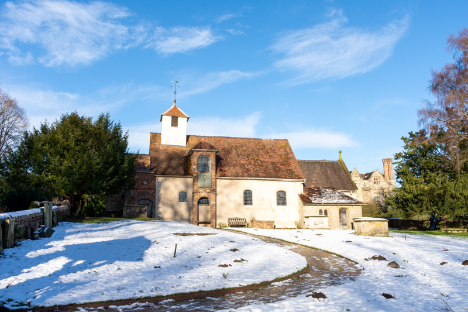
St Bartholomew, Benthall
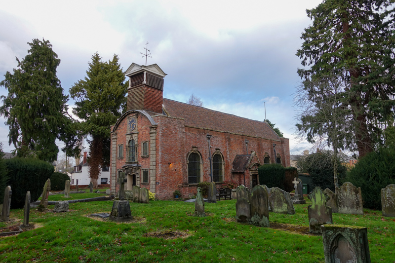
Holy Trinity, Minsterley
1658 AD (2nd May)
Thomas Bray is baptised at Chirbury, he remembered for the foundation of two of the Church of England's oldest missionary organisations - the Society for the Propagation of the Gospel and the Society for Promoting Christian Knowledge. In 1695 he was appointed by the Bishop of London to take charge of church affairs in Maryland, and his work developed from supplying the new colony with Anglican clergy and providing their parishes with libraries.
1661 AD (20th December)
The Corporation Act 1661 is given royal assent. The act provided that no person could be legally elected to any office relating to the government of a city or corporation, unless he had within the previous twelve months received the sacrament of "the Lord's Supper" according to the rites of the Church of England. He was also commanded to take the Oaths of Allegiance and Oath of Supremacy, to swear belief in the Doctrine of Passive Obedience, and to renounce the Covenant. In default of these requisites the election was to be void.
1662 AD (19th May)
The Act of Uniformity is given royal assent. The act prescribed the form of public prayers, administration of sacraments, and other rites of the established Church of England, according to the rites and ceremonies prescribed in the 1662 Book of Common Prayer. Adherence to this was required in order to hold any office in government or the church. The act also explicitly required episcopal ordination for all ministers, i.e. deacons, priests and bishops, which had to be reintroduced since the Puritans had abolished many features of the Church during the Civil War.
1662 AD (24th August - St Bartholomew Day)
The Act of Uniformity 1662, passed on 19 May 1662, authorised the usage of the 1559 prayer book until St. Bartholomew Day that year, at which point it would be replaced with the 1662 prayer book. When the 24 August date arrived, an estimated 1,200 to 2,000 Puritans were evicted from their benefices in what became known as the Great Ejection or Black Bartholomew.
The 1662 Book of Common Prayer included a number of revisions to the 1559 edition. Noted for both its devotional and literary quality, the 1662 prayer book has influenced the English language, with its use alongside the King James Version of the Bible contributed to an increase in literacy from the 16th to the 20th century.
1662 AD
Shrewsbury Unitarian Church (meeting house) was founded at its present site in 1662 by the Revd Francis Tallents and the Revd John Bryan, two dissenters ejected from St Mary's Church and St Chad's Church respectively. It was destroyed by a mob of Jacobite supporters in 1715 but rebuilt the same year.
In 1798, Samuel Coleridge accepted the position of minister at the church, (salary £120 a year) and the effect of his first sermon is recorded by the 19-year-old William Hazlitt from Wem. Coleridge's stay in Shrewsbury was just over two weeks before being offered £150 a year from Thomas Wedgwood to give up his position and study poetry and philosophy.
Charles Darwin worshipped at the church until he was eight years of age when his mother died in 1817.

Shrewsbury Unitarian Church
Great Fire of London (2nd September 1666)
Fanned by strong winds and fed by wood and fuel stockpiled for winter, the fire destroyed about 13,200 houses and 87 churches, including St Paul's Cathedral.
1673 AD (29th March)
The Test Act 1673 is given royal assent (to restrict access to public roles to those who were members of the Anglican Church). This act enforced upon all persons filling any office, civil, military or religious, the obligation of taking the oaths of supremacy and allegiance and subscribing to a declaration against transubstantiation and also of receiving the sacrament within three months after admittance to office.
1678 AD (30th November)
The Test Act 1678 is given royal assent. This act extended the Test Act 1673 and required that all peers and members of the House of Commons should make a declaration against transubstantiation, invocation of saints, and the sacrificial nature of the Mass. The effect was to exclude Catholics from both the house of lords and the house of commons, a change motivated largely by the alleged ==Popish Plot==.
Kinnerley Bells
Kinnerley church has three bells, the first and second of which are considered much superior in tone to the third. There is a story that whilst these two bells were being re-caset at Kinnerley, a local farmer stopped on his way home from the Shrewsbury cattle fair where he had sold two cows named Dobbin and Golden. The farmer was asked what he would give towards the cost of the re-casting and he replied that he would give Dobbin and Golden. He thereupon put the silver coins he had received for his cattle into the furnace. So the two bells were thereafter called Dobbin and Golden, and the silver alloy in the bell metal produced the sweetness of the tone. The first bell has no date inscribed on it, merely the alphabet twice repeated in antique characters, but the second bears the date 1685 with the churchwardens' names.

St Mary, Kinnerley
1689 AD (24th May)
The Toleration Act 1688 is given royal assent. It was passed in the aftermath of the Glorious Revolution (also known as the Revolution of 1688, was the deposition of James II and VII in November 1688).
The act allowed for freedom of worship to nonconformists who had pledged to the oaths of Allegiance and Supremacy and rejected transubstantiation, i.e. to Protestants who dissented from the Church of England such as Baptists, Congregationalists or English Presbyterians, but not to Roman Catholics, Jews, nontrinitarians, and atheists. Nonconformists were allowed their own places of worship and their own schoolteachers, so long as they accepted certain oaths of allegiance.
J.B. Joyce & Co
J.B. Joyce & Co was founded in 1690 in Cockshutt, North Shropshire, by William Joyce, initially specializing in longcase (grandfather) clocks. Renowned as one of the world's oldest turret clockmakers, the firm later moved to Whitchurch in 1790 and became famous for manufacturing large public tower clocks used in many Shropshire churches.
Abraham Darby I
In 1709 Abraham Darby I successfully produces pig iron in a coke fuelled blast furnace at Coalbrookdale.